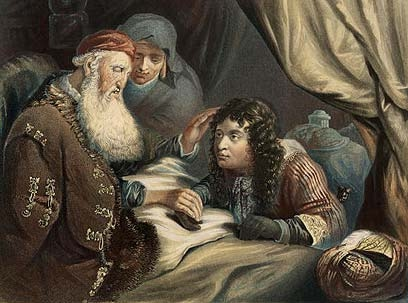
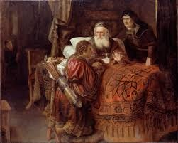
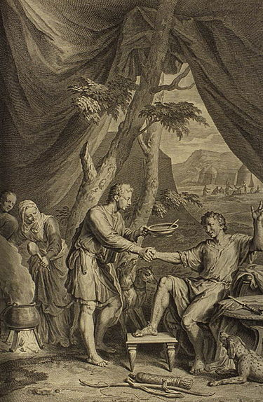
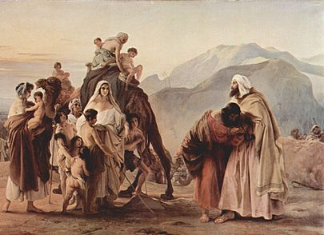
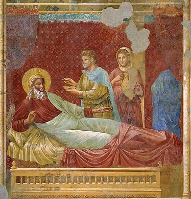

עבודה בתנ"ך - עידן לוטן ושרון נעים
אתר אינטרנט בנושא עשיו ויעקב
.
טיפ:
כשלוחצים על תמונה זה מעביר אתכם לאתר ממנו לקחנו את התמונה. שם יש מידע נוסף על התמונה





ביבליוגרפיה
סדר הלינקים הם לפי סדר התמונות
https://goo.gl/kmkzta
- כתבה על פרשת תולדות שנכתבה על ידי ד"ר זאב ווה פרידמן
https://sites.google.com/site/galmaniparasha/toldot
- הסבר על פרשת תולדות
https://goo.gl/6L4RXA
- ערך גניבת הברכות בויקיפדיה
https://goo.gl/MUkdzJ
- ערך מכירת הבכורה בויקיפדיה
https://goo.gl/ksqc6k
- ערך הפגישה המחודשת של יעקב ועשיו בויקיפדיה
https://goo.gl/jePx4C
- ערך ההיבט הספרותי של גניבת הברכות בויקיפדיה